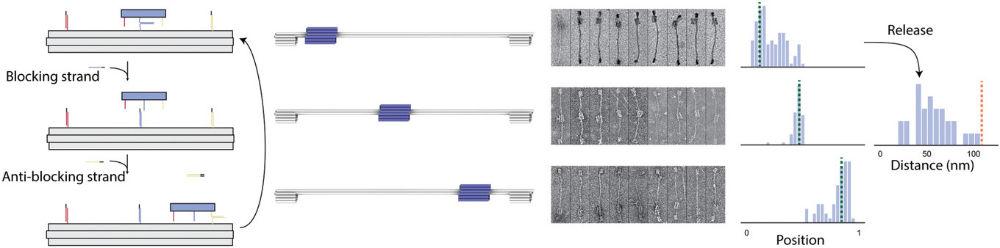

oxView
Interactive design and simulation of coarse-grained molecular dynamics in a web-browser
Joakim Bohlin
A DNA origami linear actuator

Benson, E., Carrascosa, R., Bath, J., Turberfield, A. J., Strategies for Constructing and Operating DNA Origami Linear Actuators. Small 2021, 17, 2007704. https://doi.org/10.1002/smll.202007704
Wireframe cube (full, no torsion) T = 0.06
Wireframe cube (minimal, no torsion) T = 0.02
Wireframe cube (minimal, torsion) T = 0.05
But let's return to the linear actuator